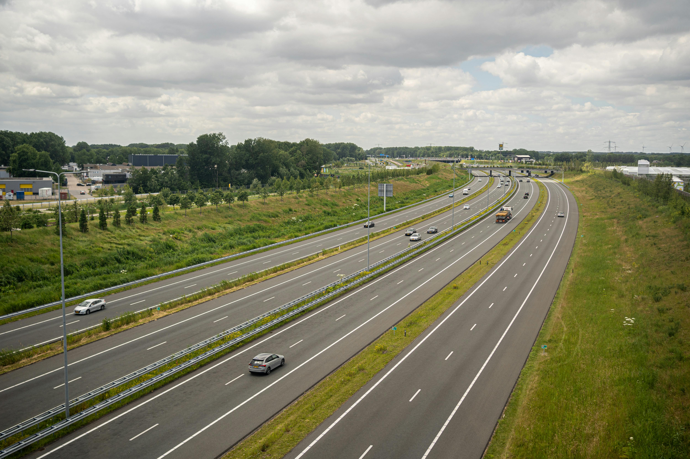

Varje dag rör vi oss mellan platser.
Till jobbet. Skolan. Vänner. Semesterresor.
Men bakom varje resa finns något vi sällan ser: ett klimatavtryck.
Klicka på korten för att lära dig mer
16 848 kt CO₂
Sverige släppte ut 16 848 kiloton koldioxidekvivalenter från transporter år 2024
-23%
Sedan toppåret 2007 har Sveriges transportutsläpp minskat med 23%
35%
Mer än en tredjedel av Sveriges totala växthusgasutsläpp kommer från transporter
2030
Sveriges officiella mål är att minska transportutsläppen med 70% till 2030 jämfört med 2010
Sveriges transportutsläpp har minskat med 23% sedan toppåret 2007. Men för att nå klimatmålet till 2030 behöver takten öka kraftigt.
Totala transportutsläppen i Sverige
Transportsektorn utgör en ryggrad i det moderna samhället, men dess stora beroende av fossila bränslen gör att sektorn har en direkt och avgörande inverkan på flera av FN:s globala mål för hållbar utveckling. Genom att ställa om transportsystemet kan framsteg accelereras inom tre sammankopplade mål:
Små val som kan göra stor skillnad för klimatet
Din resa påverkar staden du bor i
Ladda bilen med grön el

Beskrivande text här
Här kan du följa utsläppstrenderna över tid, se hur olika fordonstyper påverkar klimatet och förstå varför personbilar dominerar vägtrafikens utsläpp.
Sveriges transportutsläpp har minskat med cirka 23% sedan 2007
Jämförelse mellan transportsektorn och övriga utsläppskällor år 2023
Jämförelse av utsläpp mellan olika transportslag år 2023
Fördelning av utsläpp per fordonstyp inom vägtrafiken år 2023
Hur ligger Sverige till jämför med resten av Europa?
Växthusgasutsläpp från bränsleförbränning inom transportsektorn, tusen ton CO₂-ekv.
Transportsektorn befinner sig mitt i sin största omställning i modern tid, och genom denna plattform vill vi ge besökaren verktygen att själv utforska hur vägen mot ett fossilfritt samhälle ser ut.
Idag står transporter för cirka 35% av Sveriges totala växthusgasutsläpp, där vägtrafiken och i synnerhet personbilar utgör den största utmaningen. För att vi ska kunna nå de internationella klimatmålen krävs en djupare förståelse för hur utsläppen hänger ihop. Vårt syfte är att synliggöra denna dynamik. Genom interaktiva verktyg och visualiseringar kan besökaren följa utvecklingen från år 2007 fram till idag, samt analysera hur utsläppen fördelar sig mellan olika fordonstyper.
Vi är tre studenter från Högskolan Dalarna som vill väcka intresse för transportutsläpp och dess miljöpåverkan. Genom att ha tagit fram relevant data och akademiska källor har vi skapat en hemsida där du som individ kan läsa mer om de eventuella utsläppen du bidrar med till klimatavtrycket i Sverige. Vi vill kunna ge dig möjligheten att känna dig informerad om ämnet, och kunna göra klimatsmarta val för att hjälpa oss alla nå de globala målen för hållbar utveckling.
Oscar Nilsson Ljungdell
Omar Hussain
Sandra Eriksson
Holmgren, K., Chen, B. H., Wickman, C., Hansson, J., Malmgren, E., Olsson, M., & Lundblad, M. (2025). Transportrelaterade utsläpp av växthusgaser för godstransporter i Sverige: Nutid och scenarier under omställning för att nå klimatmål (Slutrapport Triple F 2022.5.2.3). RISE & IVL.
Liu, C., Susilo, Y. O., & Karlström, A. (2016). Estimating changes in transport CO2 emissions due to changes in weather and climate in Sweden. Transportation Research Part D: Transport and Environment, 49, 172–187.
Lund, E., & Sundberg, I. (2016). Transportsektorns klimatpåverkan ur ett livscykelperspektiv: En forskningsöversikt (Trivector Rapport 2016:84). Trivector.
Europaparlamentet. (2024, 9 december). Koldioxidutsläpp från bilar i siffror (nyhetsgrafik) (Artikel 20190313STO31218). Generaldirektoratet för kommunikation.